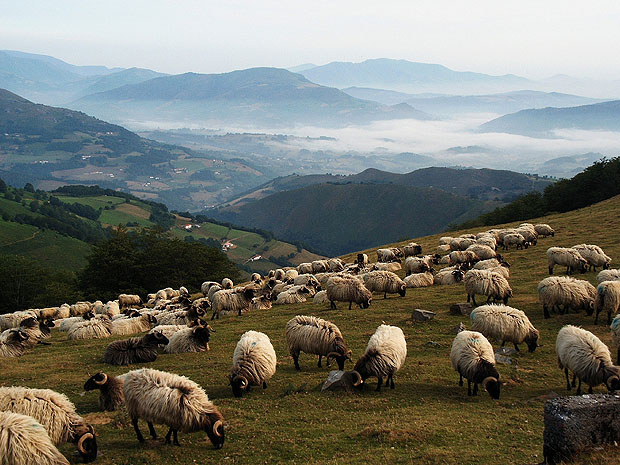
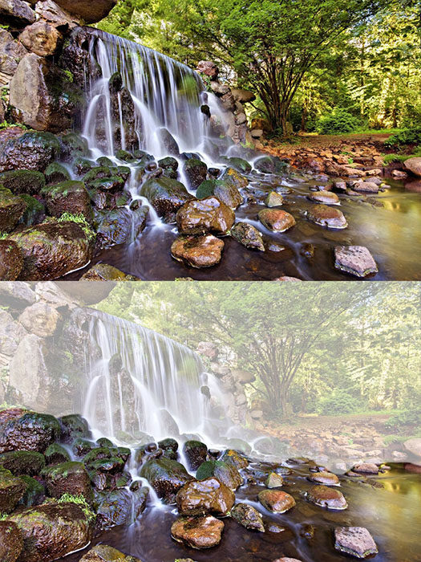

Composition | Depth
Because photography is a two-dimensional medium, we have to choose our composition carefully to conveys the sense of depth that was present in the actual scene. You can create depth in a photo by including objects in the foreground, middle ground and background. Another useful composition technique is overlapping, where you deliberately partially obscure one object with another. The human eye naturally recognises these layers and mentally separates them out, creating an image with more depth.
Including some foreground interest in a scene is a great way of adding a sense of depth to the scene. Photographs are 2D by nature. Including foreground interest in the frame is one of a number of techniques to give the scene a more 3D feel.
Having fore-, middle- and background detail will add depth to your image as well as draw the eye through the picture. Compositional elements that complement each other, for example with colour or by association, work well but do be careful with the size of objects you use and how you place them as you don't want the shot to be thrown off balance. You don't want a rock in the foreground of your landscape shot, for example, drawing the eye away from the hills and mountains in the background. Adding water to the foreground can also lighten your shot as well as adding an extra element of interest as it reflects the sky back out.